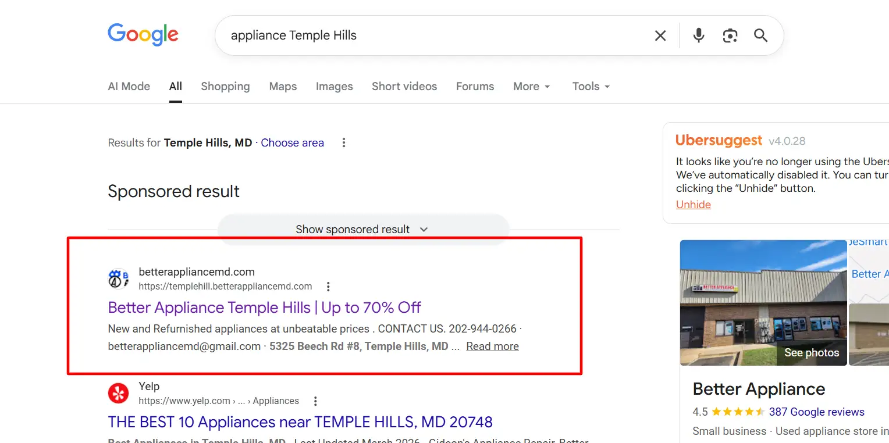
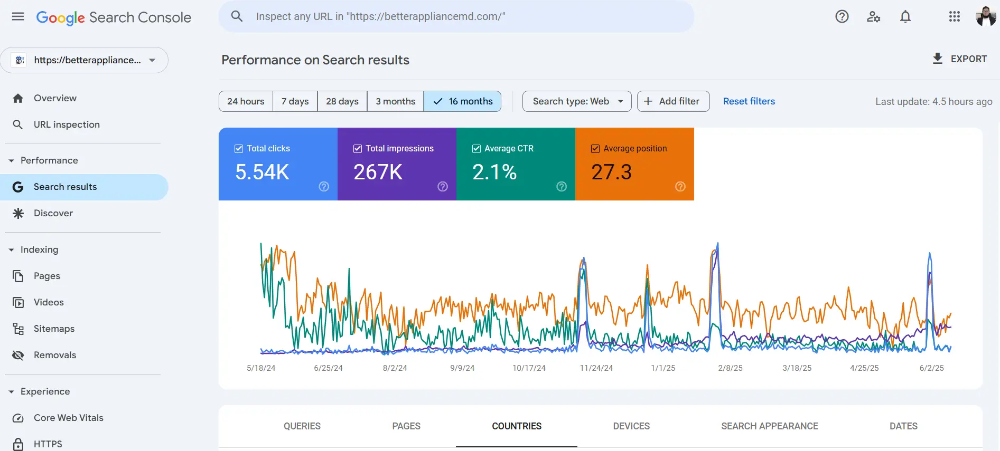
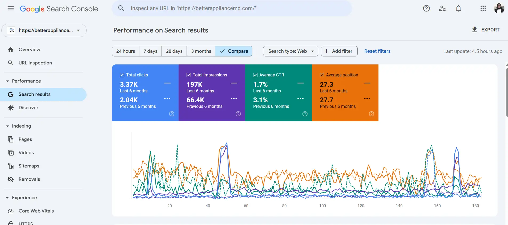
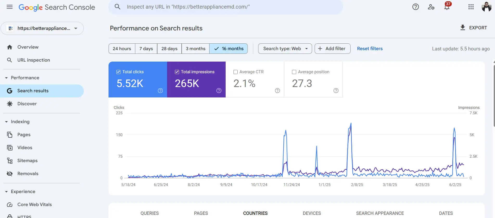
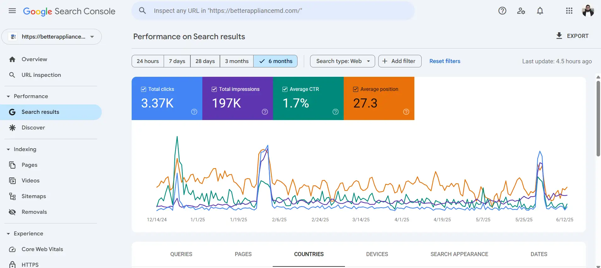

01
Low visibility for local appliance searches
Important searches like appliance store near me, discount appliances in Maryland, and used appliances near Temple Hills were not ranking strongly enough.
Better Appliance MD had strong pricing, real inventory, and a clear offline presence, but the website was not capturing enough local search demand. Through focused local SEO, on-page optimisation, and a stronger technical structure, the site began earning more clicks, impressions, and ranking visibility.
Better Appliance MD serves customers across Maryland, Virginia, and nearby DMV areas with new, scratch and dent, and refurbished appliances. The store had a good offer, but needed better search visibility so nearby buyers could discover the brand more easily.
After reviewing the website and organic search visibility, it became clear that the business needed clearer targeting, stronger local signals, and a more consistent SEO structure.
Important searches like appliance store near me, discount appliances in Maryland, and used appliances near Temple Hills were not ranking strongly enough.
Many category pages lacked clear keyword targeting, search-friendly structure, and enough context for Google to understand product relevance.
The site did not strongly reinforce service areas like Temple Hills, Forestville, Alexandria, and wider DMV-focused locations.
Internal linking, keyword mapping, titles, descriptions, and supporting content all needed a more consistent SEO framework.
The work focused on local keyword targeting, category improvements, location-based optimisation, technical cleanup, and ongoing monitoring through Search Console data.
Important phrases like discount appliances Maryland, appliance store near Temple Hills, and scratch and dent appliances near me were mapped to the right pages.
Page structure, headings, meta titles, descriptions, product copy, and internal links were improved to strengthen search relevance.
Geographic signals were reinforced across the website for Alexandria, Temple Hills, Forestville, and other surrounding DMV areas.
Crawlability, page hierarchy, indexing signals, and internal linking structure were improved so search engines could understand the site better.
Google Search Console data was used regularly to track performance and refine optimisation based on real search behaviour.

After implementing the SEO improvements, Better Appliance MD started appearing more often in relevant searches and generating more consistent traffic from Google.




Search result screenshots show Better Appliance MD appearing in local commercial searches for important service areas, helping connect the store with nearby buyers.

Example: Better Appliance appearing in Google results for an appliance-related search in Forestville, MD.
Example: Better Appliance Temple Hills showing for a commercial appliance search in Temple Hills, MD.
Better Appliance MD already had the products, pricing, and physical presence customers were looking for. The SEO work focused on making that value easier for Google to understand, which helped the business grow impressions, clicks, and local search visibility step by step.
Review the performance